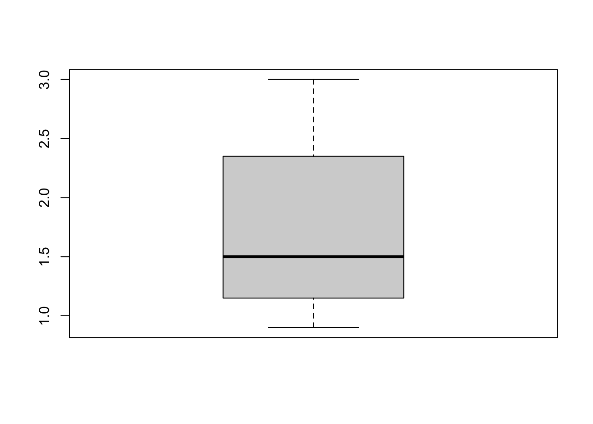

The first step in any data analysis project is to inspect and understand the data. This process allows you to familiarize yourself with the dataset, identify potential issues, and ensure that it is in a state that can be worked with. In this chapter, we’ll simplify data inspection using the janitor package and combine it with a few select functions from base R and tidyverse for deeper understanding.
Let’s practice with a dataset of entrepreneurs named entrepreneur_data that has already been imported into R (and this document).
entrepreneur_data
# A tibble: 10 × 7
name age gender sector revenue_million funding_million years_experience
<chr> <dbl> <fct> <chr> <dbl> <dbl> <int>
1 Alice 34 Female Tech 1.2 3.5 10
2 Bob 42 Male Finance 2.3 1 15
3 Charlie 29 Male Tech 0.9 0.5 5
4 Diana NA Female Health 1.8 2 12
5 Eve 25 Female Tech NA 1.8 2
6 Frank 37 Male Health 1.1 NA 8
7 Alice 34 Female Tech 1.2 3.5 10
8 Gina 31 Female Finance 2.4 1.1 7
9 Hank 48 Male Health 3 2.8 20
10 <NA> 29 Male Tech NA 0.5 5
The variables include:
name: Name of the entrepreneur
age: Age of the entrepreneur
gender: Gender of the entrepreneur
sector: The industry sector of the startup
revenue_million: The revenue of the startup in millions
funding_million: The amount of funding received in millions
years_experience: Years of experience the entrepreneur has
13.1 Overview of Your Data
To begin, let’s get an overall sense of the dataset using the adorn_totals() function from the janitor library and glimpse() function from the dplyr package in tidyverse. The janitor library offers some simple and useful functions for inspecting data that are not found in glimpse().
13.1.1 With adorn_totals() from janitor
adorn_totals() provides the sum (Total) of every variable (column) of the dataset:
## load the janitor library for access to the adorn_total functionlibrary(janitor)## adorn_totals to calculate the totals of each variableadorn_totals(entrepreneur_data)
name age gender sector revenue_million funding_million years_experience
Alice 34 Female Tech 1.2 3.5 10
Bob 42 Male Finance 2.3 1.0 15
Charlie 29 Male Tech 0.9 0.5 5
Diana NA Female Health 1.8 2.0 12
Eve 25 Female Tech NA 1.8 2
Frank 37 Male Health 1.1 NA 8
Alice 34 Female Tech 1.2 3.5 10
Gina 31 Female Finance 2.4 1.1 7
Hank 48 Male Health 3.0 2.8 20
<NA> 29 Male Tech NA 0.5 5
Total 309 - - 13.9 16.7 94
13.1.2 With glimpse() from tidyverse
glimpse() provides a transposed view of your data with variables listed as rows:
This shows us the structure of the data with variable names, types, and some of the values in each column.1
13.2 Inspecting Specific Rows
Use the following functions to quickly view specific rows:
13.2.1 With head() and tail()
These functions allow us to see the first and last rows of the dataset, respectively.
head(entrepreneur_data, 3) ## Show first 3 rows
# A tibble: 3 × 7
name age gender sector revenue_million funding_million years_experience
<chr> <dbl> <fct> <chr> <dbl> <dbl> <int>
1 Alice 34 Female Tech 1.2 3.5 10
2 Bob 42 Male Finance 2.3 1 15
3 Charlie 29 Male Tech 0.9 0.5 5
tail(entrepreneur_data, 2) ## Show last 2 rows
# A tibble: 2 × 7
name age gender sector revenue_million funding_million years_experience
<chr> <dbl> <fct> <chr> <dbl> <dbl> <int>
1 Hank 48 Male Health 3 2.8 20
2 <NA> 29 Male Tech NA 0.5 5
Note
By default, head() shows the first 6 rows, but you can adjust this by specifying the number of rows you’d like to see.
13.2.1.0.1Try it yourself:
Change the code to display the first 7 rows of entrepreneur_data.
Hint 1
head() shows 6 rows by default. Consider what argument you can add to vary from the default number of rows.
Hint 2
Add the desired number of rows (7) as an argument to the function.
head(entrepreneur_data, 3)
Fully worked solution:
Add the desired number of rows to the function as an argument in addition to the tibble name.
head(entrepreneur_data, 3)
Now change the code to display the last 4 rows of the dataset.
Hint 1
tail()) shows 6 rows by default. Consider what argument you can add to vary from the default number of rows.
Hint 2
Add the desired number of rows (4) as an argument to the function.
tail(entrepreneur_data, 4)
Fully worked solution:
Add the desired number of rows to the function as an argument in addition to the tibble name.
tail(entrepreneur_data, 4)
13.3 Inspecting Data Structure and Summary
13.3.1 Data Dimensions
dim(): Returns the number of rows and columns in the data.
nrow() and ncol(): Return the number of rows or columns separately.
dim(entrepreneur_data) ## shows that there are 10 rows and 7 columns
[1] 10 7
nrow(entrepreneur_data) ## shows that there are 10 rows
[1] 10
ncol(entrepreneur_data) ## shows that there are 7 columns
[1] 7
13.3.2 Summary of Columns
summary() provides a quick overview of each column, showing descriptive statistics for numeric variables and frequencies for categorical variables.
summary(entrepreneur_data) ## summarizes every variable
name age gender sector
Length:10 Min. :25.00 Female:5 Length:10
Class :character 1st Qu.:29.00 Male :5 Class :character
Mode :character Median :34.00 Mode :character
Mean :34.33
3rd Qu.:37.00
Max. :48.00
NA's :1
revenue_million funding_million years_experience
Min. :0.900 Min. :0.500 Min. : 2.0
1st Qu.:1.175 1st Qu.:1.000 1st Qu.: 5.5
Median :1.500 Median :1.800 Median : 9.0
Mean :1.738 Mean :1.856 Mean : 9.4
3rd Qu.:2.325 3rd Qu.:2.800 3rd Qu.:11.5
Max. :3.000 Max. :3.500 Max. :20.0
NA's :2 NA's :1
Note
This function is great for spotting potential outliers or missing values.
13.4 Inspecting Data Types and Values
Understanding the types of variables you’re working with is essential:
13.4.0.1 Structure of the Dataset
Use str() to check the structure of the dataset.
str(entrepreneur_data) ## shows the data type of every variable
Looking closely, we can also see an indicator between the name of the variable and its values. This is an indicator of the data type:
name indicates a character variable meaning that the values of the name variable are made of characters (letters rather than numbers).
age indicates numeric data and, more specifically, double-precision data (numbers that can have decimals).
gender is a category variable which is known as a factor in R.
sector is a character variable for the startup’s industry sector.2
revenue_million indicates double-precision numeric data representing revenue in units of million dollars.
funding_million is double-precision numeric data representing funding in units of million dollars.
years_experience indicates numeric data in integer form (numbers can only be whole numbers).
13.4.0.2 Checking Types for Specific Variables
You can also check the data type of specific variables with typeof():
typeof(entrepreneur_data$name) ## shows that "name" is character data
[1] "character"
typeof(entrepreneur_data$age) ## shows that "age" is a numeric (double precision) variable
[1] "double"
If you find incorrect data types (e.g., dates stored as strings, numerical values stored as characters), this inspection identifies which variables need to be transformed.
13.5 Identifying Missing Data
Missing data can affect your analysis so let’s check for missing values.
13.5.0.1 Check for Missing Values with is.na()
is.na(): detects missing values in the dataset.
sum(is.na(entrepreneur_data)) ## Total missing values
[1] 5
colSums(is.na(entrepreneur_data)) ## Missing values per column
name age gender sector
1 1 0 0
revenue_million funding_million years_experience
2 1 0
13.5.0.2 Check for Missing Values with tabyl()
You can also use tabyl() from the janitor library to get a cleaner breakdown of missing values for a specific variable.
## load the janitor librarylibrary(janitor)## get a summary of gender from tabyl()entrepreneur_data |>tabyl(gender, show_na =TRUE)
gender n percent
Female 5 0.5
Male 5 0.5
## get a summary of gender and sector from tabyl()entrepreneur_data |>tabyl(gender, sector, show_na =TRUE)
gender Finance Health Tech
Female 1 1 3
Male 1 2 2
13.5.0.3 Check for missing values with skim()
skim() (from the skimr package): Provides a more detailed overview of missing values along with summary statistics.
library(skimr) ## load the libraryskim(entrepreneur_data) ##
Data summary
Name
entrepreneur_data
Number of rows
10
Number of columns
7
_______________________
Column type frequency:
character
2
factor
1
numeric
4
________________________
Group variables
None
Variable type: character
skim_variable
n_missing
complete_rate
min
max
empty
n_unique
whitespace
name
1
0.9
3
7
0
8
0
sector
0
1.0
4
7
0
3
0
Variable type: factor
skim_variable
n_missing
complete_rate
ordered
n_unique
top_counts
gender
0
1
FALSE
2
Fem: 5, Mal: 5
Variable type: numeric
skim_variable
n_missing
complete_rate
mean
sd
p0
p25
p50
p75
p100
hist
age
1
0.9
34.33
7.14
25.0
29.00
34.0
37.00
48.0
▇▇▂▂▂
revenue_million
2
0.8
1.74
0.76
0.9
1.17
1.5
2.32
3.0
▇▁▂▃▂
funding_million
1
0.9
1.86
1.19
0.5
1.00
1.8
2.80
3.5
▇▁▃▂▃
years_experience
0
1.0
9.40
5.30
2.0
5.50
9.0
11.50
20.0
▇▅▇▂▂
13.6 Checking for Duplicates
Duplicate data can skew your analysis. Use janitor to find duplicates.
13.6.0.1 Identify and Remove Duplicates
library(janitor) ## load the libraryentrepreneur_data |>get_dupes()
No variable names specified - using all columns.
# A tibble: 2 × 8
name age gender sector revenue_million funding_million years_experience
<chr> <dbl> <fct> <chr> <dbl> <dbl> <int>
1 Alice 34 Female Tech 1.2 3.5 10
2 Alice 34 Female Tech 1.2 3.5 10
# ℹ 1 more variable: dupe_count <int>
This finds rows that have duplicate values across all columns.
13.7 Examining Distributions and Outliers
It’s essential to check for extreme values or outliers that could distort your analysis.
13.7.1 Visualizing Outliers
Use a simple boxplot to spot outliers.
boxplot(entrepreneur_data$revenue_million)

13.7.2 Counting Categorical Frequencies
Use tabyl() from the janitor library can also summarize categorical data frequencies.
library(janitor) ## load the libraryentrepreneur_data |>tabyl(sector) ## use tabyl to check for outliers in sector
sector n percent
Finance 2 0.2
Health 3 0.3
Tech 5 0.5
This shows a breakdown of the counts in the sector column.
13.7.3 Summary
As mentioned earlier, summary() from base R provides a quick way to identify outliers in numeric columns by showing the minimum, maximum, and quartiles.
entrepreneur_data |>summary() ## use summary() to check for outliers
name age gender sector
Length:10 Min. :25.00 Female:5 Length:10
Class :character 1st Qu.:29.00 Male :5 Class :character
Mode :character Median :34.00 Mode :character
Mean :34.33
3rd Qu.:37.00
Max. :48.00
NA's :1
revenue_million funding_million years_experience
Min. :0.900 Min. :0.500 Min. : 2.0
1st Qu.:1.175 1st Qu.:1.000 1st Qu.: 5.5
Median :1.500 Median :1.800 Median : 9.0
Mean :1.738 Mean :1.856 Mean : 9.4
3rd Qu.:2.325 3rd Qu.:2.800 3rd Qu.:11.5
Max. :3.000 Max. :3.500 Max. :20.0
NA's :2 NA's :1
13.8 Next Steps
In the next chapter, we’ll explore how to clean and transform data using the tools introduced here. You’ll also learn how to tidy datasets and handle missing values more effectively.
In the next chapter, we will explore how to take what we’ve learned from inspecting the data and apply the principles of tidy data to organize and clean our datasets effectively.
In this small dataset with only 10 rows, adorn_totals and glimpse() are both able to show all of the data. For larger datasets, they show a subset of the first several values of each row.↩︎
sector is probably better classified as a factor type. We will learn how to convert it from character to factor in another chapter.↩︎